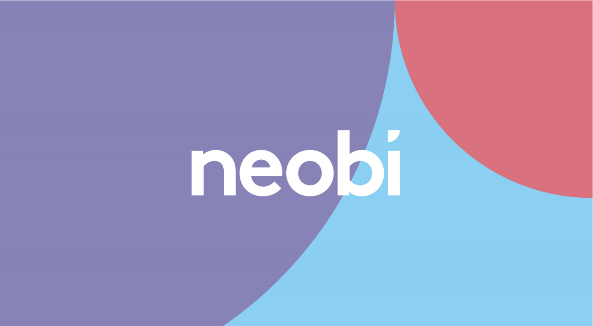

Lab 14: Typography II
Purpose:
The purpose of this lab is to be able to use block-level styling and to be able to use different elements of typography in order to recreate a webpage of our choice, however, because we had chosen to do a harder page for our Lab 13 we decided to do an easier page for Lab 14.
Challenges:
After completing Lab 14, we didn't face many challenges because since we had done a harder webpage for Lab 13 we worked on an easier webpage for Lab 14. The only thing that was time consuming was that we had to use Photoshop to create the design that was on the webpage.
Results:
Displayed in our webpage are the results of Lab 14.
